Documentation on NSM-Infrastructure
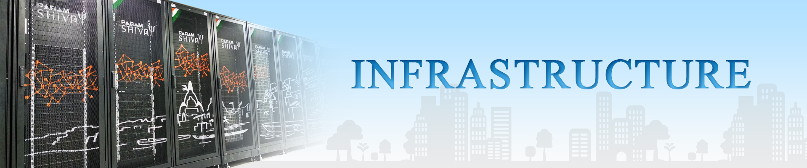
About NSM Infrastructure:
The National Supercomputing Mission aims at achieving the goals of attaining self-reliance in supercomputing, building the culture of using supercomputing for carrying out R&D and problem-solving in various domains of scientific and technological endeavours, and designing solutions for various societal applications, and positioning the supercomputing ecosystem in the country at a globally competitive level.
The mission envisions the creation of a national infrastructure of supercomputing systems and facilities of various sizes and scales, distributed across the country and seamlessly integrated through the National Knowledge Network.
The systems and facilities created as part of the infrastructure under this mission are divided into three phases of the National Supercomputing Mission: Phase I, Phase II, and Phase III
List Of Completed Sites:
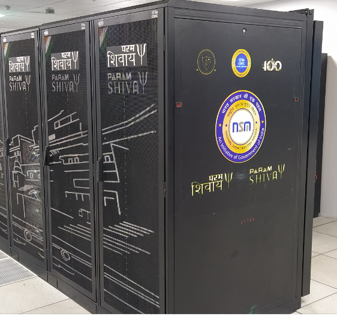
Param Shivay

Param Shakti
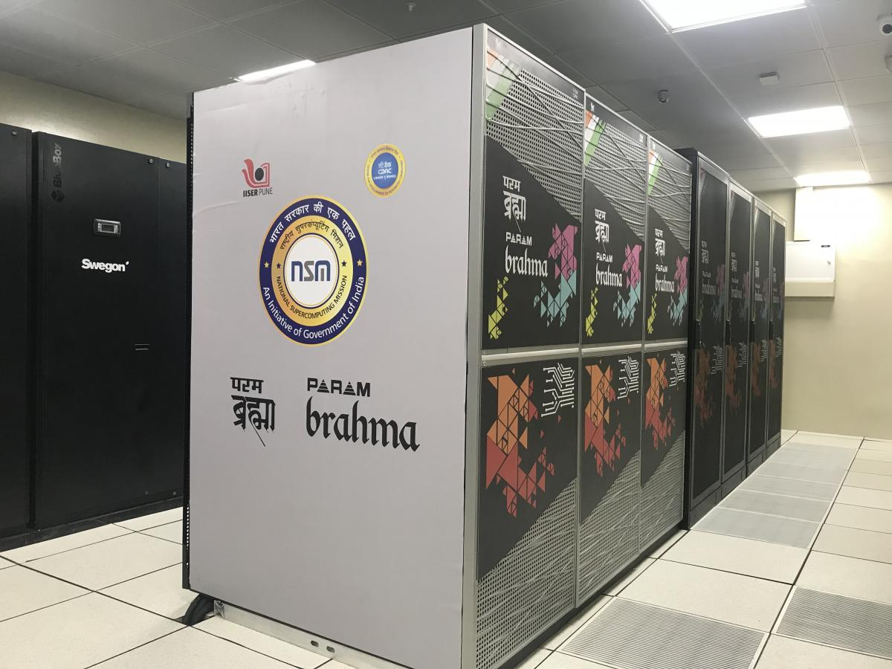
Param Brahma

Param Yukti
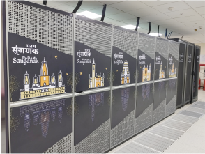
Param Sanganak

Param Pravega
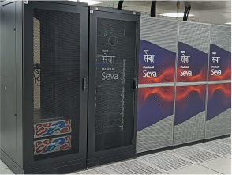
Param Seva
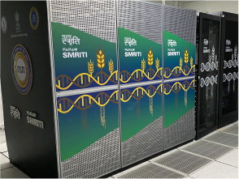
Param Smriti

Param Utkarsh
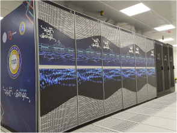
Param Ganga

Param Ananta

Param Porul
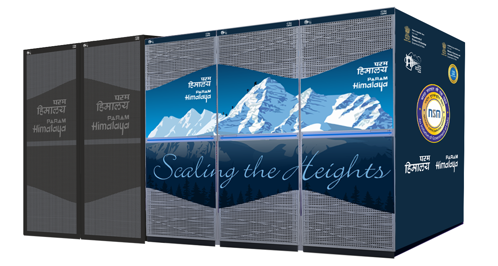
Param Himalaya

Param Kamrupa
Param Siddhi-AI

Param Rudra, IUAC

PARAM Rudra, SN Bose

PARAM Rudra, GMRT
How to access NSM HPC System and Policies:
The User Creation portal is designed to streamline the user registration and account creation process. Here's how it works:
-
User Registration:
Users register by providing their official email address, city, and institute name. A verification email is sent to confirm the provided email. -
Account Setup:
After email verification, users receive a link to complete their registration through a detailed form. Users have the ability to preview and edit the form before submitting it. -
Document Upload:
Once the registration form is submitted, a link is provided for uploading required documents, such as ID proof, the User Creation Form, and other relevant documents. Please note, after document submission, no further edits can be made, as the documents enter a verification process. -
Verification & Approval:
The submitted user details and documents are verified by the user’s Institute Head of Department (HOD) or Principal Investigator (PI) and Facility/Host Institute. Upon successful verification, the user receives their HPC System credentials.
- Accessing NSM HPC System:
For accessing the NSM hpc system kindly register on User creation Portal with institutional Email ID
For further information kindly go through the User Manual
kindly contact nsmsupport@cdac.in for any queries.
- Steps for Allocations:
1. Each NSM site has a Super-computing Allocation committee for Access approval.
2. Users can approach HI/CDAC for NSM resource allocation for HI Internal /NSM Apps/external users a. Internal user allocation and policies will be decided by Host Institute
3. Users will receive the NSM resource access form
4. External users can approach C-DAC through nsmsupport@cdac.in for resource access.
For Further information kindly visit NSM resource allocation process
For Infrastructure related information kindly visit NSM Infrastructure
For HPC Usage Charging Policy:
| User Category | Academic and R&D Institutions | MSME | Commercial Users |
|---|---|---|---|
| Priority | Normal | High | High |
| CPUcore/hr | Rs. 0.96 | Rs. 0.96 | Rs. 1.50 |
| GPUcard/hr | Rs. 42 | Rs. 42 | Rs. 100 |
| Storage/month | 100GB free/account Rs. 1/GB thereafter |
100GB free/account Rs. 1/GB thereafter |
100GB free/account Rs. 1.50/GB thereafter |
| Billing Period | Monthly/Quarterly/Annually | Monthly/Quarterly/Annually | Monthly/Quarterly/Annually |
Param Pravega Details:
PARAM Pravega, a cutting-edge supercomputing facility, was established under Phase-2 of the National Supercomputing Mission's build approach. It boasts a peak computing power of 3.3 PFLOPS and was designed and commissioned by C-DAC to meet the computational needs of IISc, Bangalore, and various research and engineering institutes in the region. The system is valuable for research in various scientific domains, including Weather & Climate, Oil & Gas, Seismic, Life, Material sciences, and more.
System Configuration:
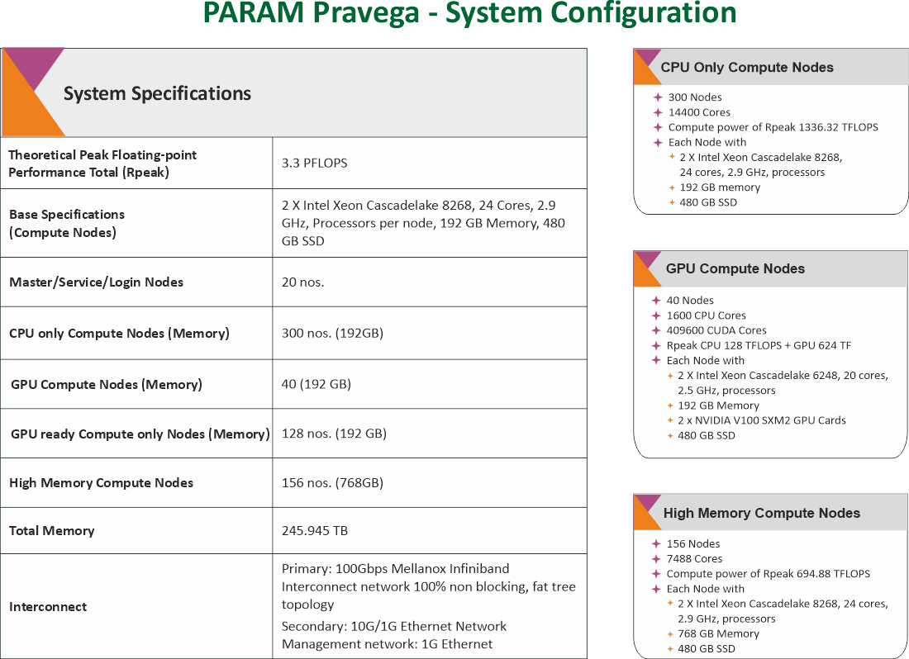
Architecture Diagram:
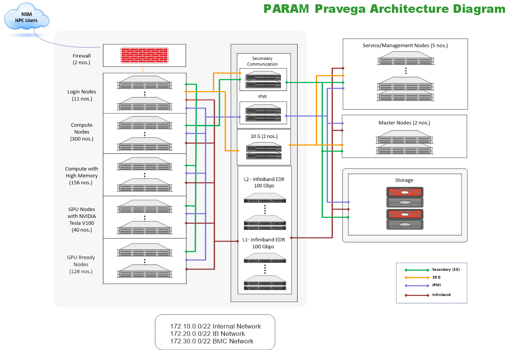
Software Stack:
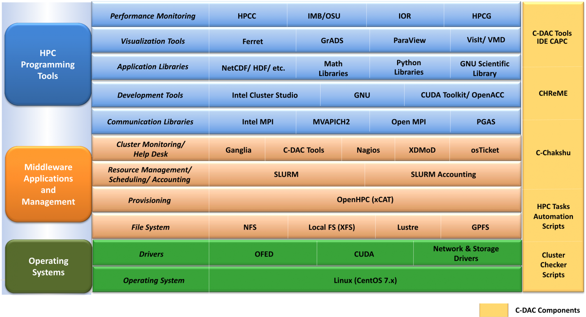
Installed Applications/Libraries:
| HPC Applications | Bio-informatics | MUMmer, HMMER, MEME, PHYLIP, mpiBLAST, ClustalW |
| Molecular Dynamics | NAMD (for CPU and GPU), LAMMPS, GROMACS | |
| CFD | OpenFOAM, SU2 | |
| Material Modeling, Quantum Chemistry | Quantum-Espresso, Abinit, CP2K, NWChem | |
| Weather, Ocean, Climate | WRF-ARW, WPS (WRF), ARWPost (WRF), RegCM, MOM, ROMS | |
| Deep Learning Libraries | cuDNN, TensorFlow, Theano | |
| Dependency Libraries | NetCDF, PNETCDF, Jasper, HDF5, Tcl, Boost, FFTW | |
Note: The same details apply to all clusters.